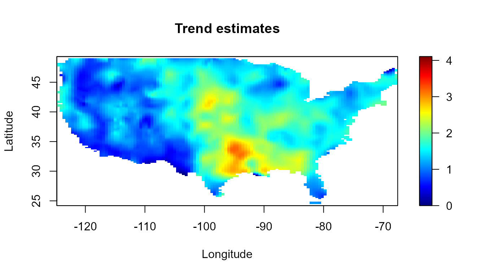

Nonparametric Spatial Data Analysis with the npsp Package
Ruben Fernandez-Casal (ruben.fcasal@udc.es)
npsp 0.6.2
The npsp package
library(npsp)## Package npsp: Nonparametric Spatial Statistics,
## version 0.6-2 (built on 2017-10-02).
## Copyright (C) R. Fernandez-Casal 2012-2017.
## Type `help(npsp)` for an overview of the package and
## `demo(package = "npsp")` for the list of available demos.Example: Nonparametric spatial analyses of Wolfcamp aquifer data
# ?aquifer
str(aquifer)## 'data.frame': 85 obs. of 3 variables:
## $ lon : num 42.78 -27.4 -1.16 -18.62 96.47 ...
## $ lat : num 127.6 90.8 84.9 76.5 64.6 ...
## $ head: num 1464 2553 2158 2455 1756 ...# Scatter plot with a color scale
with(aquifer, spoints(lon, lat, head, main = "Wolfcamp aquifer data"))
Model
Model: \[Y(\mathbf{x})=m(\mathbf{x})+\varepsilon(\mathbf{x})\]
\(m(\cdot)\) tendencia (función de regresión).
\(\varepsilon\) proceso de error estacionario de 2\({{}^o}\) orden, de media cero y covariograma \(C(\cdot)\).
Modelo no paramétrico: no se supone ninguna forma concreta para \(m(\mathbf{\cdot})\) y \(\gamma(\mathbf{\cdot})\) (funciones suaves).
Ventajas:
Evitan problemas debidos a una mala especificación del modelo.
Más fáciles de automatizar.
De utilidad en inferencia paramétrica.
Example: Wolfcamp aquifer
summary(aquifer)## lon lat head
## Min. :-145.24 Min. : 9.414 Min. :1024
## 1st Qu.: -21.30 1st Qu.: 33.682 1st Qu.:1548
## Median : 11.66 Median : 59.158 Median :1797
## Mean : 16.89 Mean : 79.356 Mean :2002
## 3rd Qu.: 70.90 3rd Qu.:131.825 3rd Qu.:2540
## Max. : 112.80 Max. :184.766 Max. :3571scattersplot(aquifer[,1:2], aquifer$head/100,
main = "Wolfcamp aquifer data", xlab = 'lon',
ylab='lat', zlab = 'piezometric-head (hundreds)',
col = jet.colors(128))
Herramientas disponibles en R
Geoestadística:
-
geoR,fields,sm, …
Estadística no paramétrica:
mgcv(splines),KernSmoothmodreg(stats),MASS,gamsm,locfit,ks,fields,locpol,bigvis, …
Problemas:
Funcionalidad muy limitada para estadística espacial no paramétrica .
Dificultad para implementar nuevos métodos.
Otras limitaciones: lentitud (e.g. no binning), n\({{}^o}\) de dimensiones,…
El paquete npsp: https://cran.r-project.org/package=npsp
Linear binning
Para acelerar los cálculos se emplea binning (WARPing; e.g. Wand and Jones, 1995):
datos \(\Longrightarrow\) discretización \(\Longrightarrow\) suavizado \(\Longrightarrow\) interpolación
Discretización: binning lineal.
Procedimiento análogo para interpolación lineal.
npsp functions: binning (S3 generic and methods), …
Binning:
# fig.height=5, fig.width=5}
cpu.time(reset=TRUE)## CPU time has been initialized.bin <- binning(aquifer[,1:2], aquifer$head, nbin = c(41,41), set.NA = TRUE)
simage(bin, main = 'Binning averages')
points(bin$data$x, col = 'darkgray')
cpu.time(total = FALSE)## Time of last operation:
## user system elapsed
## 0.02 0.00 0.01
npsp functions: interp (S3 generic and methods), predict (methods locpol.bin y np.den).
nbin.hd <- c(128, 128)
bin.nna <- binning(aquifer[,1:2], aquifer$head, nbin = nbin.hd)
with(bin.nna$data, summary((y - interp(bin.nna, newx = x)$y)/y ))## Min. 1st Qu. Median Mean 3rd Qu. Max.
## -0.0267747 0.0000000 0.0000000 -0.0001124 0.0000000 0.0249106Density estimation
La estimación de la densidad está implementada como un caso particular de regresión (se suavizan los pesos binning reescalados).
Example: Wolfcamp aquifer
# fig.height=7, fig.width=7}
h.den <- diag(c(55,55))# alternatively: h.cv(as.bin.den(bin))$h
den <- np.den(bin, h = h.den, degree = 0)
plot(den, main = 'Estimated log(density)')
# Index with grid nodes far from data
mask <- log(den$est) > -15
bin <- mask(bin, mask = mask)
cpu.time(total = FALSE)## Time of last operation:
## user system elapsed
## 0.17 0.04 0.22Trend estimation
Regresión polinómica local
Caso univariante
Para cada \(x_{0}\) se ajusta un polinomio: \[\beta_{0}+\beta_{1}\left(x - x_{0}\right) + \cdots + \beta_{p}\left( x-x_{0}\right)^{p}\] por mínimos cuadrados ponderados con pesos \(w_{i} = \frac{1}{h}K\left(\frac{x-x_{0}}{h}\right)\).
\(\hat{m}_{h}(x_{0})=\hat{\beta}_{0}\).
Adicionalmente: \(\widehat{m_{h}^{r)}}(x_{0}) = r!\hat{\beta}_{r}\).
Habitualmente:
\(p=0\): Estimador Nadaraya-Watson.
\(p=1\): Estimador lineal local.
Caso multivariante
Análogo al caso univariante.
Estimador lineal local multivariante: \[\min_{\beta_{0},\boldsymbol{\beta}_{1}}\sum_{i=1}^{n} \left( Y(\mathbf{x}_{i})-\beta_{0}-{\boldsymbol{\beta}}_{1}^{t} (\mathbf{x}_{i}-\mathbf{x})\right)^{2} K_{\mathbf{H}}(\mathbf{x}_{i}-\mathbf{x}),\] \(\hat{m}_{\mathbf{H}}(\mathbf{x})=\hat{\beta}_{0}\), donde:
\(\mathbf{H}\) matriz definida positiva de orden \(d\).
\(K_{\mathbf{H}}(\mathbf{u})=\left\vert \mathbf{H}\right\vert ^{-1}K(\mathbf{H}^{-1}\mathbf{u})\), \(K\) núcleo multivariante.
Explícitamente: \[\hat{m}_{\mathbf{H}}(\mathbf{x}) = \mathbf{e}_{1}^{t} \left( \mathbf{X}_{\mathbf{x}}^{t} {\mathbf{W}}_{\mathbf{x}} \mathbf{X}_{\mathbf{x}} \right)^{-1} \mathbf{X}_{\mathbf{x}}^{t} {\mathbf{W}}_{\mathbf{x}}\mathbf{Y} \equiv {s}_{\mathbf{x}}^{t}\mathbf{Y}\]
\(\mathbf{e}_{1} = \left( 1, \cdots, 0\right)^{t}\).
\(\mathbf{X}_{\mathbf{x}}\) matriz con \((1,(\mathbf{x}_{i}-\mathbf{x})^{t})\) en fila \(i\).
\(\mathbf{W}_{\mathbf{x}} = \mathtt{diag} \left( K_{\mathbf{H}}(\mathbf{x}_{1} - \mathbf{x}), ..., K_{\mathbf{H}}(\mathbf{x}_{n}-\mathbf{x}) \right)\).
Matriz de suavizado o matriz hat \(\mathbf{S}\): matriz \(n\times n\) con \(\mathbf{s}_{\mathbf{x}_{i}}^{t}\) en la fila \(i\), tal que \(\mathbf{\hat{Y}}=\mathbf{SY}\).
npsp functions: locpol (S3 generic and methods).
Permite cácular eficientemente la matriz de suavizado o matriz hat \(\mathbf{S}\) (de utilidad p.e. para la estimación de la dependencia de los datos o la selección de la ventana).
Código optimizado para minimizar el tiempo de computación y los requerimientos de memoria. Especialmente en Validación cruzada, Estimación del variograma y Simulación.
Los cálculos se realizan en FORTRAN. Para resolver el problema de regresión lineal (local), el paquete
npspemplea una modificación de la rutina DGELSY de la librería LAPACK (admite matrices de rango deficiente).
Example: Wolfcamp aquifer
lp <- locpol(bin, h = diag(75, 2), hat.bin = TRUE)
# np.svariso.corr: 'lp' must have a '$locpol$hat' component
# Perspective plot with a color scale
spersp(lp, main = 'Trend estimates', zlab = 'piezometric-head levels',
theta = 120) 
cpu.time(total = FALSE)## Time of last operation:
## user system elapsed
## 0.31 0.03 0.34Variogram estimation
Modelado de la dependencia
También se realiza a partir de los residuos: \[e(\mathbf{x}_{i})=Y(\mathbf{x}_{i})-\hat{m}(\mathbf{x}_{i})\]
Note: To avoid the biases in variogram estimation, the use of (the fully nonparametric correction algorithm in) function np.svariso.corr() will be recomended (see e.g. Fernández-Casal and Francisco-Fernández, 2013, or the section about Bias-corrected variogram estimation)
Si la media se supone cte.: \(e(\mathbf{x}_{i})\equiv Y(\mathbf{x}_{i})\).
Se puede ver como un caso particular de regresión: \[\gamma\left( \mathbf{x}_{i}-\mathbf{x}_{j}\right) =\frac{1}{2}E\left( \varepsilon(\mathbf{x}_{i})-\varepsilon(\mathbf{x}_{j})\right)^{2}\]
con \(N=\frac{n(n-1)}{2}\) observaciones: \[{\left(\mathbf{x}_{i}-\mathbf{x}_{j}, (e(\mathbf{x}_{i})-e(\mathbf{x}_{j}))^2 / 2 \right)}\] (sesgadas si se estima la tendencia).
Estimación piloto del variograma
Estimador polinómico local:
\[\begin{aligned} \min_{\beta_{0}, \boldsymbol{\beta}_{1}, \cdots} \sum_{i=1}^{n}\left( \frac{1}{2} \left( e(\mathbf{x}_{i})-e(\mathbf{x}_{j}) \right)^{2} - \beta_{0} - {\boldsymbol{\beta}}_{1}^{t} (\mathbf{x}_{i} - mathbf{x}_{j} - \mathbf{u}) - \cdots\right) ^{2}\times & \\ K_{\mathbf{G}}(\mathbf{x}_{i}-\mathbf{x}_{j}-\mathbf{u}) & \end{aligned}\]
\(\hat{\gamma}_{\mathbf{G}}(\mathbf{u}) = \hat{\beta}_{0}\).
Ajuste de un modelo no paramétrico
Los estimadores anteriores no pueden ser usados en kriging.
Para resolver este problema se ajusta un modelo válido.
Modelos no paramétricos de Shapiro-Botha. Caso isotrópico: \[\gamma(\left\Vert \mathbf{u} \right\Vert ) = \nu_{0} - \sum\limits_{k=1}^{K}\kappa_{d}(x_{k}\left\Vert \mathbf{u}\right\Vert )z_{k},\]
\(x_{k}\) nodos de discretización (fijos).
\(\kappa_{d}(x) = \left( \tfrac{2}{x}\right)^{{\frac{d{-2}}{2}}} \Gamma\left( \tfrac{d}{2}\right) J_{{\frac{d{-2}}{2}}}(x),\ \ \ \kappa_{\infty}(x)\equiv e^{-x^{2}}\).
\(\left( z_{1}, ..., z_{K}, \nu_{0} \right)^{t}\) parámetros, verificando: \[z_{k} \geq0 \text{ y } c_{0} = \nu_{0}-\sum\nolimits_{k=1}^{K}z_{k}\geq0.\]
Extensibles al caso anisotrópico (Fernandez-Casal et al., 2003).
El ajuste por WLS a un conjunto de estimaciones piloto se puede realizar fácilmente mediante programación cuadrática (modificación de la función solve.QP del paquete quadprog).
Example: Wolfcamp aquifer
lp.resid <- lp$data$y - predict(lp)
maxlag <- 0.55*sqrt(sum(diff(apply(aquifer[,1:2], 2, range))^2))
esvar <- np.svariso(aquifer[,1:2], lp.resid, maxlag = 150, nlags = 60, h = 60)
svm <- fitsvar.sb.iso(esvar) # dk = 2
plot(svm, main = "Nonparametric semivariogram and fitted model")
cpu.time(total = FALSE)## Time of last operation:
## user system elapsed
## 0.13 0.03 0.16Bias-corrected variogram estimation
The direct use of the residuals introduces a bias in the estimation of the variogram. This bias is usually negative and higher at large lags (e.g. Cressie, 1993, section 3.4.3). A correction for this bias is proposed in Fernandez-Casal and Francisco-Fernandez (2013). A similar algorithm (fully nonparametric) is implemented in np.svariso.corr.
esvar2 <- np.svariso.corr(lp, maxlag = 150, nlags = 60, h = 60, plot = TRUE)
## Iteration 2 : 1
## Iteration 3 : 0.1021595
## Iteration 4 : 0.07323588
## Iteration 5 : 0.05777008
## Iteration 6 : 0.04794432svm2 <- fitsvar.sb.iso(esvar2) # dk = 2
plot(svm2, main = "Nonparametric bias-corrected semivariogram and fitted models",
lwd = 2)
with(svm$fit, lines(u, fitted.sv, lty = 2))
cpu.time(total = FALSE)## Time of last operation:
## user system elapsed
## 0.34 0.04 0.37Bandwidth selection
Validación cruzada tradicional:\[CV(\mathbf{H})=\frac{1}{n}\sum_{i=1}^{n} \left( Y(\mathbf{x}_{i}) - \hat{m}_{-i}(\mathbf{x}_{i}) \right)^{2},\] siendo \(\hat{m}_{-i}(\mathbf{x}_{i})\) la estimación obtenida eliminando el dato \(i\).
Validación cruzada modificada para dependencia (Chu and Marron, 1991): \[CV_{m}(\mathbf{H})=\frac{1}{n}\sum_{i=1}^{n}\left( Y(\mathbf{x}_{i})-\hat {m}_{-N(i)}(\mathbf{x}_{i})\right)^{2},\] siendo \(\hat{m}_{-i}(\mathbf{x}_{i})\) la estimación obtenida eliminando los datos en un vecindario \(N(i)\) de \(\mathbf{x}_{i}\).
Validación cruzada generalizada con corrección de sesgo para dependencia (Francisco-Fernandez and Opsomer, 2005): \[GCV_{c}(\mathbf{H})=\frac{1}{n}\sum_{i=1}^{n}\left( \frac{Y(\mathbf{x}_{i})-\hat{m}(\mathbf{x}_{i})}{1-\frac{1}{n}tr\left( \mathbf{SR}\right) }\right) ^{2},\] siendo \(\mathbf{R}\) la matriz de correlaciones (estimada).
Example: Wolfcamp aquifer
# Example (speeding computations...):
bin2 <- binning(aquifer[,1:2], aquifer$head, nbin = c(21,21))
# Warning: There is not enough data in some neighborhoods ('NRL < NINDRL'):
h.cv(bin2, h.start = c(50, 25), objective = "GCV", ncv = 0)## $h
## [,1] [,2]
## [1,] 70.49316 0.00000
## [2,] 0.00000 66.65354
##
## $value
## [1] 30321.69
##
## $objective
## [1] "GCV"# cov.bin <- varcov(svm2, coords = coords(bin2))
lp.h <- h.cv(bin2, h.start = c(50, 25), objective = "GCV", ncv = 0, cov.bin = svm2)
lp.h## $h
## [,1] [,2]
## [1,] 406.4146 0.00000
## [2,] 0.0000 65.67983
##
## $value
## [1] 53359.01
##
## $objective
## [1] "GCV"cpu.time(total = FALSE)## Time of last operation:
## user system elapsed
## 0.94 0.25 1.19Final estimation
trend re-estimation
lp <- locpol(lp, h = lp.h$h, hat.bin = TRUE) # np.svariso.corr
# Perspective plot with a color scale
spersp(lp, main = 'Trend estimates', zlab = 'piezometric-head levels', theta = 120) 
cpu.time(total = FALSE)## Time of last operation:
## user system elapsed
## 0.12 0.06 0.19Variogram re-estimation
lp.resid <- residuals(lp)
esvar <- np.svariso(aquifer[,1:2], lp.resid, maxlag = 150, nlags = 60, h = 60)
svm <- fitsvar.sb.iso(esvar) # dk = 2
esvar3 <- np.svariso.corr(lp, maxlag = 150, nlags = 60, h = 60, plot = FALSE)
svm3 <- fitsvar.sb.iso(esvar3, dk = 0)
plot(svm3, main = "Nonparametric bias-corrected semivariogram and fitted models",
lwd = 2)
# with(svm$fit, lines(u, fitted.sv, lty = 2))
with(svm2$fit, lines(u, fitted.sv, lty = 2, lwd = 2))
cpu.time(total = FALSE)## Time of last operation:
## user system elapsed
## 0.21 0.04 0.25trend and variogram re-re-estimation?
Do you think it is necessary?…
Compute the final trend estimates:
lp <- locpol(aquifer[,1:2], aquifer$head, nbin = nbin.hd,
h = lp$locpol$h, hat.bin = FALSE)
# Perspective plot with a color scale
simage(lp, main = 'Final trend estimates\n(piezometric-head levels)') 
cpu.time(total = FALSE)## Time of last operation:
## user system elapsed
## 1.98 0.02 1.99Kriging predictions
Cressie, 1993 Chilés y Delfiner,
Example: Wolfcamp aquifer
Kriging system
krig.grid <- kriging.np(lp, svm3)
cpu.time(total = FALSE)## Time of last operation:
## user system elapsed
## 0.39 0.06 0.46Kriging maps
simage(krig.grid, 'kpred', main = 'Kriging predictions',
col = jet.colors(256))
simage(krig.grid, 'ksd', main = 'Kriging sd', col = hot.colors(256))
with(aquifer, points(lon, lat, cex = 0.75))
cpu.time()## Time of last operation:
## user system elapsed
## 0.09 0.05 0.14
## Total time:
## user system elapsed
## 4.70 0.62 5.32Resumen y futuras implementaciones
Resumen
Entorno homogéneo para la estimación polinómica lócal multidimensional: densidad, tendencia, variograma,…
Binning, matriz de suavizado, derivadas, …
Mínima dependencia de otros paquetes.
Trata de minimizar el tiempo de computación y los requerimientos de memoria.
Clases y métodos S3 sencillos.
Pensado para interactuar con las clases S4 del paquete
sp.Del mismo tipo que las del paquete alternativo
sf.
Fácil implementación de nuevos métodos.
References
Chu, C.K. and Marron, J.S. (1991) Comparison of Two Bandwidth Selectors with Dependent Errors. The Annals of Statistics, 19, 1906-1918.
Fernandez-Casal R. and Francisco-Fernandez M. (2013) Nonparametric bias-corrected variogram estimation under non-constant trend. Stoch. Environ. Res. Ris. Assess. (SERRA), 1-14, doi:10.1007/s00477-013-0817-8.
Fernandez-Casal R., Gonzalez-Manteiga W. and Febrero-Bande M. (2003) Flexible Spatio-Temporal Stationary Variogram Models. Statistics and Computing, 13, 127-136.
Francisco-Fernandez M. and Opsomer J.D. (2005) Smoothing parameter selection methods for nonparametric regression with spatially correlated errors. Canadian Journal of Statistics, 33, 539-558.
Wand M.P. and Jones M.C. (1995) Kernel Smoothing. Chapman and Hall.